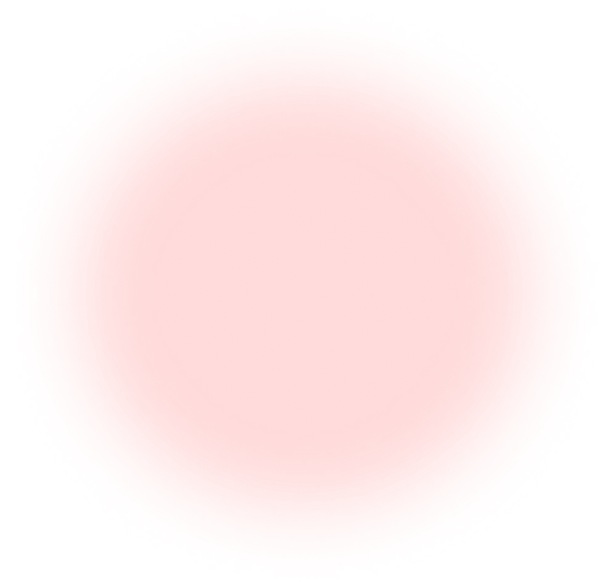
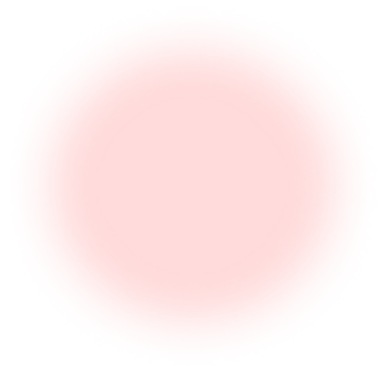

GMF 2017
GMF 2017의 프로모션 페이지를 기획하고 반응형 웹으로 구현하여 사용자가 다양한 기기로 행사 정보를 확인할 수 있도록 한다.



GMF 2017의 프로모션 페이지를 기획하고 반응형 웹으로 구현하여 사용자가 다양한 기기로 행사 정보를 확인할 수 있도록 한다.

메인 색상
→ 각각의 스테이지를 선택할 수 있는 select box를 만들어 원하는 스테이지를 선택하면 해당 스테이지의 타임테이블을 확인할 수 있도록 했다.
→ 이유를 찾아보니 배경 요소가 필요하다고 해서 div로 가상 요소를 추가한 후에 브라우저를 전부 채울 수 있게 크기를 설정하고 적용하니 원하던 효과가 적용되었다.
→ 투명하게 설정된 header의 로고와 겹쳐서 해당 버튼이 제대로 클릭되지 않고 있는 게 원인이었고, header의 height 값을 조절하여 해당 문제를 해결하였다.